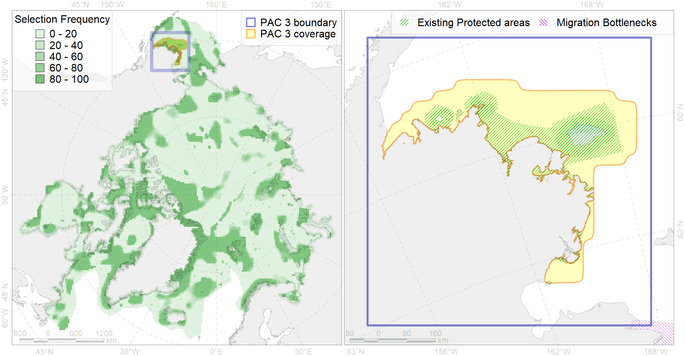

Region 3
Region 3
“ArcNet” scenario 33 achievement for region 3.
Use Accenter for advanced mode.

0
CFs inside of Region completely
18
CFs inside of Region at quarter
32
Complete-targets achievement by Region
40
Half-targets achievement by Region
| CF | Name | Target Achievement for Region | Proportion of Target Achievement in Region | Amount Proportion in Region |
|---|---|---|---|---|
| 5010 | Beluga of the Bristol Bay spring-summer distribution | 106.8% | 100.0% | 96.6% |
| 3105 | polynya Bering SE | 785.8% | 99.9% | 94.4% |
| 8018 | Chukchi Sea estuaries | 164.1% | 86.2% | 82.1% |
| 5018 | Beluga of the Eastern Bering Sea summer core distribution | 100.1% | 99.4% | 81.5% |
| 5009 | Beluga of the Bristol Bay autumn-winter distribution | 107.9% | 99.5% | 61.6% |
| 7089 | I.3.1.3. Bristol Bay and Kuskokwin Bay inner shelf | 401.5% | 97.4% | 52.3% |
| 6067 | Common eider (Somateria mollissima v-nigrum) wintering grounds | 56.5% | 46.6% | 39.8% |
| 5019 | Beluga of the Eastern Bering Sea winter distribution | 69.8% | 69.6% | 35.6% |
| 7221 | Kelp forests along the Bering Sea coast of southern Alaska and Aleutian Islands | 206.5% | 54.9% | 35.1% |
| 7233 | Kelp forests of north-eastern coast of Bering Sea | 200.3% | 76.6% | 34.0% |
| 6077 | Common murre (Uria aalge inornata) breeding colonies | 58.3% | 36.4% | 31.5% |
| 3017 | Marginal Ice Zone distribution in April in the Eastern Bering Sea LME | 227.8% | 73.5% | 28.4% |
| 2060 | Ribbon seal whelping areas as predicted by MIZ distribution | 223.1% | 76.4% | 27.6% |
| 2063 | Spotted seal whelping areas as predicted by MIZ distribution | 144.7% | 80.7% | 27.0% |
| 2058 | Bearded seal whelping areas in the Bering Sea as predicted by MIZ distribution | 107.0% | 38.0% | 26.8% |
| 6017 | Long-tailed duck (Clangula hyemalis) East Asian wintering grounds | 33.3% | 32.3% | 26.0% |
| 7088 | I.3.1.2. Norton Sound inner shelf | 105.1% | 86.8% | 25.4% |
| 2054 | Spotted seal foraging areas | 199.9% | 39.4% | 25.3% |
| 4005 | Spawning areas of the Pacific Capelin (Mallotus villosus catervarius) in Alaska (F11) | 122.7% | 32.2% | 23.4% |
| 6027 | Glaucous gull (Larus hyperboreus barrovianus) breeding grounds | 176.3% | 54.5% | 22.9% |
| 4025 | Feeding/migration area of the Coho Salmon (Oncorhynchus kisutch) (F 25) | 358.6% | 38.4% | 22.8% |
| 6048 | Black-legged kittiwake (Rissa tridactyla tridactyla) breeding colonies | 34.9% | 25.3% | 22.6% |
| 4026 | Feeding/migration area of the Chinook Salmon (Oncorhynchus tshawytscha) (F 26) | 311.1% | 33.9% | 19.8% |
| 1015 | Pacific Walrus Breeding Area | 67.4% | 32.2% | 17.5% |
| 4033 | Feeding area of the Dolly Varden (Salvelinus malma) (F 30) | 135.2% | 27.8% | 17.2% |
| 6074 | King eider (Somateria spectabilis) Pacific winetring grounds | 30.0% | 20.7% | 16.2% |
| 2043 | Ringed seal whelping areas in the Bering Sea | 62.0% | 35.6% | 16.0% |
| 2055 | Steller Sea Lion habitats of critical importance | 27.3% | 16.4% | 15.8% |
| 4084 | Fish zoogeography, Pacific Region, 6 - high-boreal and 7 - low-boreal districts of the Eastern North-Pacific subregion | 179.4% | 41.4% | 15.6% |
| 4016 | Feeding area of the Broad whitefish (Coregonus nasus), Euro-Asian populations F 19 | 43.8% | 31.1% | 15.4% |
| 2006 | Bearded seal whelping areas in the Bering Sea | 54.8% | 31.1% | 14.2% |
| 6107 | 6107 Fratercula corniculata breeding colonies | 52.4% | 20.4% | 13.6% |
| 1019 | Pacific Walrus Winter Distribution | 47.8% | 25.5% | 12.6% |
| 7247 | seagrasses of the High Arctic | 41.7% | 22.9% | 12.5% |
| 7090 | I.3.1.4. Middle and outer shelf of eastern Bering Sea | 285.7% | 29.1% | 11.3% |
| 6100 | 6100 Risstridactylpollicarius breeding colonies | 16.0% | 16.0% | 11.3% |
| 6085 | Horned puffin (Fratercula corniculata) breeding colonies | 28.0% | 12.7% | 10.9% |
| 2034 | Ribbon seal foraging areas in the Bering Sea | 167.5% | 27.2% | 10.9% |
| 6010 | Brent goose (Branta bernicla nigricans) American breeding&moulting grounds | 42.8% | 30.1% | 10.8% |
| 4019 | Feeding area of the Vendace, Least cisco (Coregonus sardinellа), American populations (F 20) | 41.8% | 21.0% | 10.7% |
| 5054 | Harbour porpoise feeding areas in the Bering Sea | 160.9% | 30.6% | 10.7% |
| 2032 | Northern Fur seal range | 139.1% | 26.6% | 10.7% |
| 6103 | 6103 Urilomviarrrbreeding colonies | 20.0% | 15.0% | 10.5% |
| 6087 | Red-legged kittiwake (Rissa brevirostris) wintering grounds | 48.3% | 22.2% | 10.4% |
| 4024 | Distribution of the Chum Salmon (Oncorhynchus keta) (F24) | 161.3% | 19.1% | 10.3% |
| 5058 | Humpback whale summer feeding areas in the Eastern Bering Sea | 65.3% | 59.2% | 9.9% |
| 1017 | Pacific Walrus haulouts | 12.0% | 11.7% | 9.8% |
| 4044 | Range of the Pacific cod (Gadus macrocephalus) (F 38) | 289.0% | 19.6% | 9.4% |
| 6045 | Stellers eider (Polysticta stelleri) Pacific moulting&migration stopovers | 17.1% | 15.9% | 9.3% |
| 1018 | Pacific Walrus Summer-Autumn Distribution | 35.4% | 15.2% | 9.0% |
| 4011 | Feeding area of the Lake whitefish (Coregonus clupeaformis) (F 16) | 21.0% | 19.9% | 8.7% |
| 6073 | King eider (Somateria spectabilis) Pacific moulting&migration stopovers | 17.1% | 14.8% | 8.7% |
| 7055 | cold corals of the Pacific | 12.8% | 10.8% | 8.0% |
| 4004 | Range of the Pacific Capelin (Mallotus villosus catervarius) (F11) | 246.3% | 18.0% | 8.0% |
| 6102 | 6102 Uriaalge inornatbreeding colonies | 19.8% | 11.8% | 7.9% |
| 4070 | Local forms of the White-Sea herring (Clupea pallasii) (F8) | 30.2% | 17.0% | 7.8% |
| 4050 | Range of the Pollock (Theragra chalcogramma) (F 43) | 119.8% | 17.5% | 7.8% |
| 4006 | Feeding/nursery area of the Pacific rainbow smelt (Osmerus dentex) (F12) | 38.6% | 14.6% | 7.4% |
| 4013 | Feeding/nursery area of the Bering cisco (Coregonus laurettae), Asian populations (F17) | 19.5% | 18.7% | 7.4% |
| 4023 | Feeding/migration area of the Pink Salmon (Oncorhynchus gorbuscha), native distribution (F23) | 108.2% | 16.3% | 7.0% |
| 4058 | Range of the Arctic flounder (Liopsetta glacialis) (F48) | 106.9% | 13.8% | 6.9% |
| 6088 | 6088 Aethipusillbreeding colonies | 26.2% | 8.8% | 6.9% |
| 4042 | Range of the Saffron cod (Eleginus gracilis) (F 36) | 106.0% | 15.6% | 6.9% |
| 6078 | Common murre (Uria aalge inornata) wintering grounds | 28.6% | 18.1% | 6.0% |
| 6084 | Thick-billed murre (Uria lomvia) Pacific wintering grounds | 21.4% | 18.1% | 6.0% |
| 4091 | Fish zoogeography, Arctic Region, Subarctic Transitional-Pacific Province | 30.2% | 8.6% | 4.7% |
| 4055 | Range of the Shorthorn Sculpin (Myoxocephalus scorpius) (F 46), American populations | 112.6% | 6.4% | 3.6% |
| 6079 | Thick-billed murre (Uria lomvia arrra) breeding colonies | 4.7% | 4.4% | 3.4% |
| 6039 | Ivory gull (Pagophila eburnea) Pacific wintering grounds | 11.6% | 8.6% | 3.0% |
| 6001 | Least Auklet (Aethia pusilla) breeding colonies | 8.1% | 3.2% | 2.9% |
| 6066 | Common eider (Somateria mollissima v-nigrum) breeding&moulting grounds | 6.9% | 6.8% | 2.4% |
| 4014 | Feeding area of the Siberian whitefish (Coregonus pidschian) (F 18) | 7.6% | 4.8% | 1.8% |
| 9022 | polar bear denning areas of CS (Chukchi Sea) subpopulation | 2.1% | 2.0% | 1.8% |
| 2040 | Ringed seal molting areas in the Bering Sea | 3.5% | 2.7% | 1.7% |
| 5112 | Arctic Cetaceans (beluga, bowhead, narwhal) winter habitats as predicterd by MIZ | 3.7% | 3.0% | 1.5% |
| 4053 | Range of the Fourhorn Sculpin (Myoxocephalus quadricornis) (F 45), Euro-Asian populations | 37.1% | 2.2% | 1.2% |
| 3018 | Marginal Ice Zone distribution in April in the Chukchi Sea LME | 4.2% | 0.9% | 0.9% |
| 9004 | polar bear of the CS (Chukchi Sea) subpopulation distribution | 2.0% | 1.7% | 0.8% |
| 4041 | Range of the Polar Cod (Boreogadus saida) (F35) | 5.0% | 1.9% | 0.6% |
| 6050 | Spectacled eider (Somateria fischeri) moulting grounds | 0.0% | 0.0% | 0.2% |